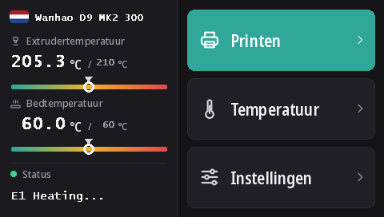

Het touchscreen van de Duplicator 9 flashen
Elke D9, van MK1 tot MK3, heeft hetzelfde DWIN T5-touchscreen (480 × 272). Met deze firmwares draait het DGUS Reloaded 2.0, onze nieuwe interface in 16 talen, geflasht vanaf een microSD-kaart.
DWIN_SET.zip downloaden (DGUS Reloaded 2.0)
Wat DGUS Reloaded 2.0 biedt
- 16 talen: English, Français, Deutsch, Español, Italiano, Português, Nederlands, Polski, Türkçe, Русский, العربية, हिन्दी, 中文, 日本語, 한국어, Bahasa Indonesia. Tik op het startscherm op de vlag naast de printernaam om te wisselen; de printer onthoudt de keuze.
- Een pagina voor de filamentsensor: Instellingen → Filament → Filamentsensor. Zie Filamentsensor.
- Een statusregel die blijft staan: het laatste bericht, bijvoorbeeld Ready, blijft in beeld in plaats van na 30 seconden te verdwijnen.
- Temperatuurmeters voor de nozzle en het bed, met de doeltemperatuur gemarkeerd.
- Een nieuw uiterlijk voor elke pagina: donker thema, grotere knoppen, pictogrammen in de pop-ups.

1. De microSD-kaart formatteren
- Windows: Windows 11 wil vaak niet naar FAT32 formatteren; gebruik GUIFormat en zet de grootte van de toewijzingseenheid op 4096.
- Linux:
sudo mkfs.fat -F 32 -s 8 /dev/sdX1(controleer eerst het apparaat metlsblk). - macOS:
sudo newfs_msdos -F 32 -c 8 /dev/diskN(controleer metdiskutil list).
2. De bestanden kopiëren
Pak DWIN_SET.zip uit en kopieer de hele map DWIN_SET naar de hoofdmap van de kaart.
3. Flashen
- Zet de printer uit en haal de stekker uit het stopcontact.
- Open de voorkant van de voet om bij de achterkant van het scherm te komen, waar de microSD-sleuf zit.
- Steek de kaart erin en zet de printer aan. Het scherm toont de update binnen 10 tot 30 seconden; wacht tot het weer normaal opstart, in totaal 1 tot 3 minuten.
- Zet de printer uit, haal de kaart eruit en sluit de voet.
De video van Wanhao over een schermupdate van de D9 laat zien waar de sleuf zit.
Waar het vandaan komt
DGUS Reloaded 2.0 tekent DGUS Reloaded 1.0.3 (van Desuuuu, daarna Neo2003) pagina voor pagina opnieuw. De broncode, het programma dat de schermbestanden genereert en de vertalingen staan op GitHub. Een fout of onhandig woord in jouw taal? Laat het ons weten op Discord of open daar een issue.
Om terug te gaan naar DGUS Reloaded 1.0.3, bijvoorbeeld met een firmware ouder dan v2.0.9, flash je DWIN_SET_1.0.3.zip op dezelfde manier.
Terug naar het scherm van Wanhao
De schermfirmware van Wanhao werkt alleen met de moederbordfirmware van Wanhao. MK1: het schermbestand van de bijbehorende versie op de MK1-pagina. MK1 + kit, MK2 en MK3: DWIN_SET_MK2.zip. Zelfde werkwijze.